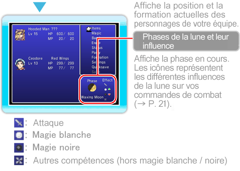
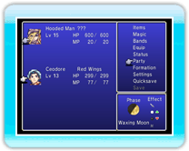

14 |
Navigation |
 |
|
Appuyez sur 

● ÉquipeSélectionnez « Équipe » pour modifier l’ordre des personnages de votre équipe. Commencez par sélectionner un personnage, puis choisissez à quel endroit le placer ou avec quel autre personnage il changera de place. Appuyez sur 
● FormationCe menu vous permet de placer chaque personnage en avant ou en arrière. Les personnages placés à l’arrière voient leur puissance d’attaque physique et leur précision réduites (à quelques exceptions près), mais sont moins durement touchés par les attaques physiques des ennemis que ceux placés à l’avant.
|
 pour confirmer votre choix.
pour confirmer votre choix. |
 |
 |